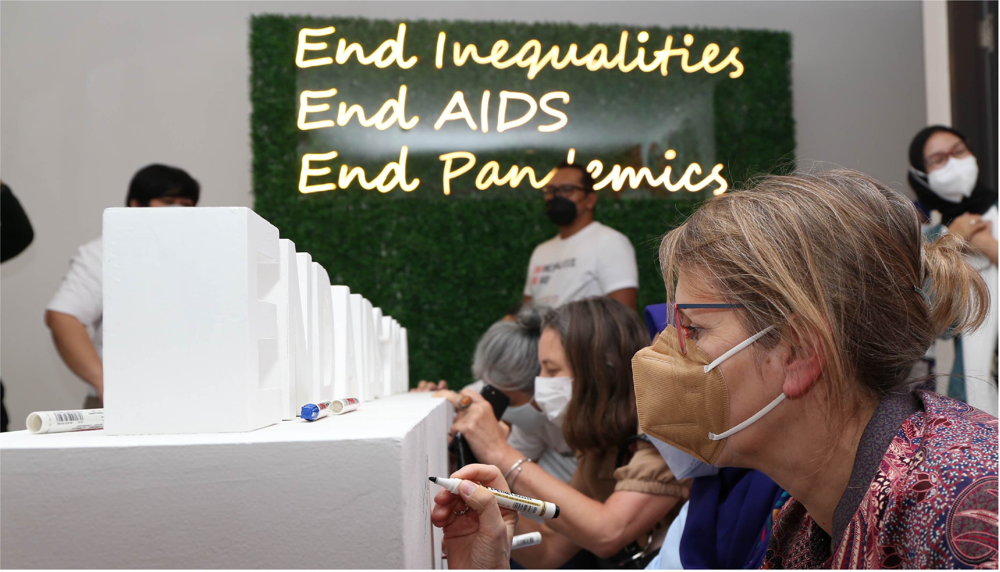

United Nations In Indonesia
Country Results Report 2021
Strong Health Systems
The COVID-19 pandemic pushed Indonesia’s healthcare system to the brink in 2021. At the peak of June and July’s surge in infections, the hospital bed occupancy rate for isolation reached 78% in Indonesia, with 76% bed occupancy at Intensive Care Units. This not only taxed the country’s ability to mitigate the impact of the coronavirus but its ability to cope with an
array of contemporary health challenges. In response, the Ministry of Health (MoH) increased the capacity of isolation wards by 38%, and by 138% for Intensive Care Units.
UN interventions also helped ensure the system continued to function under unprecedented stress. The World Health Organization alone supported 39 activities to strengthen Indonesia’s healthcare capacity, across technology, policy, and human resources. In conjunction with Universitas Gadjah Mada, for example, the UN trained more than 1,350 officials in evidence-based health policymaking, with a further 106 trained in health planning and education. Through 14 additional training activities, a total of 4,312 participants enhanced their knowledge on various aspects of pharmacology and pharmacovigilance, particularly related to the national COVID-19 preparedness and response plan.
In 2021 the UN continued to support the Government’s National Health System Reform (SKN) agenda through reviewing the impact of COVID-19 on health policies, assessing the Ministry of Health’s organisational structure, and reviewing existing regulations. Systemwide interventions include support for several major studies to better understand challenges hindering universal access to sexual and reproductive healthcare, including family planning, and a “Building Healthy Cities” program involving 440 multidisciplinary actors, which contributed to improved health access for those often left behind, greater community participation, and the development of a citizen reporting system for stunting and wasting. Through the program, the UN developed a data integration platform to support data-driven decision-making in the City of Makassar for seven healthy city-related sectors, including public works, tourism, and transportation.
In 2021, the UN supported government proposals that mobilised almost US$88 million from the Global Fund—an international body designed to accelerate the end of HIV, TB, and Malaria as epidemics— towards COVID-19 rapid response and mitigation of HIV, TB, and Malaria during COVID-19. A further US$88 million was mobilized towards Indonesia’s HIV response in 2022-2023. In total, the UN helped the Government secure almost US$457 million from the Global Fund for 2021- 2023 for the national response on HIV, TB, and malaria.
